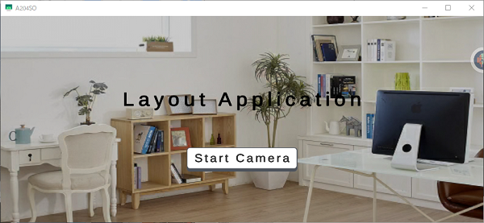
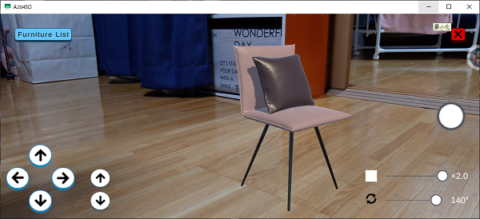

ohnuki's portfolio
practice
layoutapplication
作成経緯
ポリテクセンターの訓練プログラムに組み込まれていた企業実習にて作成したアプリ。
企業様よりportfolioとして使用して良いと許可をいただいたため、使用させていただきます。
ありがとうございます。
概要
ARを利用して3Dデザインの家具を空間に表示させるアプリ
 機能
家具の切り替え
リストから表示させたい家具の切替が可能
家具の絞り込み
選択できる家具をジャンルごとに絞り込み可能

家具のtransform調整
表示した家具の位置、大きさ、向きの調整が可能

家具配置イメージの保存
配置した際のイメージ画像をスマホのカメラロールに保存可能
おまけ要素
Top画面の背景
背景がランダムで切り替わる
操作説明
アプリの起動後、camera画面に遷移した際1度だけ表示される(2度目の遷移は表示されない)
UIの表示切り替え
状況に応じて不要なUIは非表示となる(家具選択後は検知した平面のみで操作系のUIは表示されない)
アピールポイント
●外部のアセット(ツール)は使わない
unityには多くの無料ツールがあるため、それを使えば比較的楽に実装できる機能もあったかと思う。
だが、自ら考えてコーディングを行わなければ理解に繋がらないと考えたため、
ツールの使用は選択肢から外していた。（カメラロールへの保存は、実装期間中は頼ってしまった）
●似たような機能は異なる方法で実装
unityには多くの機能があるが1つの機能に頼ってしまうと、どこかで詰まったときに
別の解決策を見つけるのが難しくなると感じたため。
●操作の補助機能
実際に仕事をする場合はお客様がいてこそ成り立つものなので、
できる限り使いやすくなるようにと実装した。
表示家具の位置調整
ARカメラの特性上、カメラの起動時の位置を原点としてアプリが動作するため、
撮影する向きを変更してしまったら正面がずれてしまう。
例）北向きで起動しアプリ動作中に南を向いた場合
カメラは常に起動時を正面ととらえているため、位置調整ボタンの前を押した場合は後ろに動く
そこで、カメラの向きを基準に家具の調整をかけられるようにコーディングした。
苦労したポイント
●スマホ本体のカメラロールへの保存
実習期間中に挑戦するが、カメラロールを直接操作するにはjavaでのコーディングが
必要との結果にたどり着き、進捗具合を考え一度断念した。
実習期間後に自宅で挑戦して完成したものの、すべてを理解できず一部は
サイトに記載されていたコードのまま。
androidstudioの記載もあり、少し深く入り込もうとすると他の知識も必要になってくるため、
プログラミングの難しさを感じた。
●数学的要素の理解
objectの向きに関して、unity上で視覚的に操作できる数値と内部で動いている数値が
異なっていたため理解に苦しんだ。
また、どのような考え方なのかを調べたが、「unityでゲーム作るだけなら理解までは不要」
と記載されているぐらいで、自身には到底理解できる気がしなかったのがとても悔しかった。
追加したい機能
●複数家具の表示
実用性を考えるのであれば、複数の家具を配置できることが理想。
実装方法：新たな家具を選択したことをトリガーに表示されている家具が削除されるため、
削除ボタンは別途作成する。
家具の調整UI類が「表示されている家具」と紐づいているため、複数の家具を表示した場合、
調整UI操作時の対象が表示されているすべての家具となってしまう。
「タップした家具」とへの変更のためRigidbodyの追加等が必要。
●家具ごとに水平面･垂直面検知の切り替え
現状、上下方向の移動も可能なため配置自体は可能だが、
絵画なども一度床に設置してからの調整となり手間となっている。
実装方法：平面検知しているobjectのcomponentをscriptから動的に変更する。(水平面 ↔ 垂直面)
(すべて検知も可能だが、画面内の情報量が多くなってしまったため、すべて検知での実装は却下した。)
家具ごとに平面検知のtypeを持たせ、上記の切り替えを行う。
●家具ボタンの自動生成
現在、登録家具が比較的少ないため、手動でボタンに家具のイメージ画像やprefabをセットしているが
他にも表示したい家具を登録する場合、設定ミスが多発する可能性がある。
家具モデルと家具の種類の登録のみで追加完了が理想。
実装方法：scriptを使用して動的にセットするだけだが、
エディタ上では動くものの、実機になるとセットはされていても動かなかった。
異なるプロジェクトを作成している他の実習生も動かず、実習期間でできる内容ではないと判断し
諦めてしまっていた。
各objectの生成やscriptの実行タイミングなど、深いところまで勉強して実装したい。
●絵画への画像挿入
カメラロールへの保存はとりあえずできたが、カメラロールからの読み取りは行っていないため、
自身の好奇心で実装したい機能。スマホに3Dモデルを登録していることはないと思うので、
普段の撮影風景の画像等を額縁に入れて表示できるようにする。
実装方法：画像挿入用のprefabを準備。カメラロールからの画像読み取り(実装挑戦時調査)。
ImageObjectへのセット。
※二つ目の画像を読み取った際に一つ目の画像に上書きされないように注意。
感想
自身のレベルでは満足できるものはとても作成できないと感じた。
まだまだやりたいことはあってもそれを実装するためにはどうすれば良いのか
すぐ立ち止まってしまう。一つ一つの内容の理解度が浅いと感じた。
何度も読み解いてみれば納得できるものの、読み解く前にこのようなことが
記載されているのだろうと予想できるまでならなければと思った。
また、作成にあたって他の方からの助言や、実機を操作していただいた際の反応で
気づかされることが多々あり、まだ視野が狭いと感じた。
ただ、unityに関してはこの実習がなければ触れることはなかっただろうと感じたため、
他の人が触れることがなかったものに触れられた貴重な機会だったと思う。
まだC#の知識に乏しいため、C#の知識を身に付けてから作品を更新できたらと思う。
なにか作ったら…
他に何か作ったら追加していくところ
Copyright © ohnuki's portfolio All Rights Reserved.